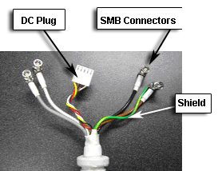

- 00000018WIA301EED20GYZ
- id_131069513.0
- Aug 29, 2019 1:56:28 AM
3.0T HD 8-Channel Cardiac Coil Troubleshooting
Personnel Requirements
| Required Persons | Preliminary Reqs | Procedure | Finalization |
|---|---|---|---|
| 1 | Timing N/A | 30 min | Timing N/A |
Overview
The following tips can be used to troubleshoot common problems with the 3.0T HD 8-Channel cardiac coil.
Preliminary Requirements
Tools and Test Equipment
| Item | Qty | Effectivity | Part # | Manufacturer |
| Digital Volt Meter (DVM) | 1 | - | - | - |
| Phantom | 1 | Legacy Phantom Set | 2381683-3 | - |
| Phantom Positioner | 1 | Legacy Phantom Set | 2412782 | - |
| Phantom Anterior Positioner | 1 | Legacy Phantom Set | 2413102 | - |
Required Conditions
The following coil configuration names must be installed to run the MCQA tool 3.0T HD 8-Channel cardiac coil:
-
HD Cardiac
-
HD CardiacServ
Procedure
Receiving No Signal
Problem:
You are unable to pre-scan or are scanning and yet receiving no signal.
Possible Solution:
-
Verify the green light above the port (Port A or B, depends on which port is used to plug in the coil) is illuminated. This indicates the coil is properly plugged into the system.
-
Verify that the landmark is correct (refer to 3.0T HD Cardiac Array Setup for Coil SNR Test) and that the cradle has not unlatched.
-
Verify that the scan locations and any FOV offsets are correct.
-
Perform a continuity check on the output cable (Output Cable Check). The continuity check must be performed by a GE authorized Service Engineer.
-
Verify that the coil is positioned with the cable exiting towards the bore.
-
Verify that the cable is not looped or crossed.
There can also be a problem at the system interface port. Try scanning in both ports. If you still cannot get a signal, try to scan (transmit and receive) with the body coil. For this test, be sure to remove the imaging coil from the magnet bore before you scan with the body coil. If you still receive no signal the problem probably lies with the MR system. If the scan completes successfully, there is probably a problem with the cardiac coil. Contact GE for further assistance. If you are unable to scan with the substitute coil, there may be a system problem related to this particular coil type.
Image Quality
Problem:
Poor IQ, shaded images, or if SNR fails
Possible Solution:
-
Perform a continuity check on the output cable (Output Cable Check). The continuity check must be performed by a GE authorized Service Engineer.
-
If the check on the output cable shows that the cable is OK and the low SNR problem happens to one or more of the anterior coil channels, replace the anterior coil. Refer to the 3.0T HD 8-Channel Cardiac Coils Replacement procedure.
-
If the check on the output cable shows that the cable is OK and the low SNR problem happens to one or more of the posterior coil channels, replace the posterior coil. Refer to the 3.0T HD 8-Channel Cardiac Coils Replacement procedure.
-
Verify that there are no loops in the cables.
-
Verify that there are no metal or ferromagnetic objects close to the coil, patient or magnet (i.e., safety pin, hair pin).
-
Verify that the coil is properly positioned.
-
Verify that your center frequency is within the frequency adjustment range for your system.
-
Verify that the R1, R2 and TG values from the pre-scan are within normally expected ranges.
If you have not done so already, perform the coil Quality Assurance test (refer to Operator’s Manual). If the values you obtain do not fall within normal operating parameters, investigate this further by performing a phantom scan with the body coil. For this test, be sure to remove the imaging coil from the magnet bore before you scan with the body coil. If you still have the same problems, there is probably an MR system problem. If the body coil scan is satisfactory, acquire a scan using another coil of the same type (receive-only, phased array). If the image quality is visibly improved, there may be a problem with the cardiac coil. Contact GE for further assistance. If the image quality still suffers, there may be a system problem related to imaging with this type of coil.
Artifacts
Problem:
There is a black line or signal void on the image.
Possible Solution:
Verify that there is no metal present in the area being scanned in or on the patient.
Output Cable Check
Before removing the cable assembly from the coil, visually inspect all coaxial connectors and pins on the system plug. If there are any broken, deformed or recessed pins or coaxial connectors, replace the cable assembly.
Remove the cable assembly from coil, refer to the 3.0T HD 8-Channel Cardiac Coils Replacement procedure.
RF Signal Channels Check
The center pins of the System Connector receive coaxial connectors are extremely fragile. Do not attempt to make any measurements at these center pins.



The following procedure will rule out a short to GND for each of the signal pins detailed in the following table. This check does not determine continuity for each of the MC signal connections.
With the coil cable disconnected, use a DVM (Set to Continuity) to assure an open circuit condition exists between the designated pin and GND for each signal channel, refer to Table 1.
| Coil Side Connector RF GND Shield | Coil Side Connector RF Center Pin |
|---|---|
| CH1 | CH1 |
| CH2 | CH2 |
| CH3 | CH3 |
| CH4 | CH4 |
| CH5 | CH5 |
| CH6 | CH6 |
| CH7 | CH7 |
| CH8 | CH8 |
If one or more of the readings indicate a short, replace the cable. If all of the above readings indicate an open circuit condition, proceed to the DC Lines Continuity Check.
DC Lines Continuity Check
With the coil cable disconnected, use a multimeter (set to continuity) to determine continuity between the designated pins for each control channel listed in Table 2.
| System Side Connector Pin | Coil Side Connector |
|---|---|
| F1 | CH1 (yellow MC bias 1) |
| F2 | CH2 (green MC bias 2) |
| F3 | CH3 (purple MC bias 3) |
| F4 | CH4 (brown MC bias 4) |
| F5 | CH5 (yellow/white MC bias 5) |
| F6 | CH6 (green/white MC bias 6) |
| F7 | CH7 (gray MC bias 7) |
| F8 | CH8 (blue MC bias 8) |
| I6 | (Black GND) |
| I7 | (White coil ID) |
| I8 | (Black/White coil ID return) |
| I3 | (Red +10V) |
| I5 | System cable shield (GND) |
If any pair indicates an open, replace the output cable.